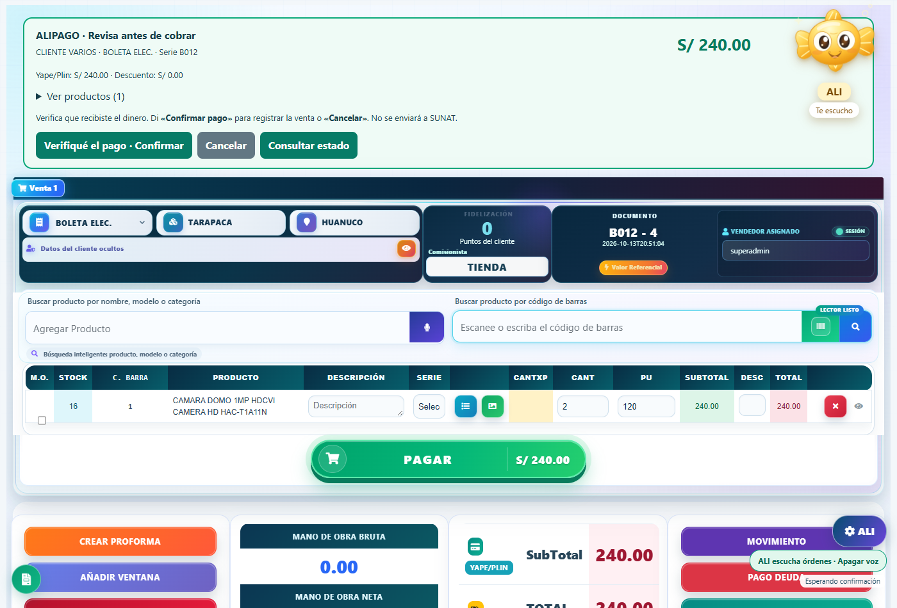

13 de octubre de 2026 · S/240 por dos cámaras con Yape/Plin.
API real: preparación S/240 con Yape y defaults reales; cancelación sin venta. Navegador real: Hola ALI → buscar por código → dictar uno y aceptar → dos unidades → Yape → ALIPAGO → resumen → cancelar. Solo el reconocimiento se simula; catálogo, valores predeterminados y validación financiera de preparación usan el ERP real.
Base temporal aislada: se ejecutó el callback exacto POST /ventas del ERP sobre esquemas ficticios. El resultado fue una cabecera, un detalle, un pago Yape por S/240 y un movimiento bancario, con TIENDA preservado. La confirmación repetida devolvió el mismo recibo. También pasaron concurrencia, rollback, sesión, CSRF y errores visibles. No se registraron ventas reales, no se cambiaron existencias ni se llamó a SUNAT u OpenAI. No se probó el micrófono físico.

Cambios: integration/ali-checkout.php, src/views/Ventas.vue. Pruebas: tools/test-ali-pago-real-defaults.php, tools/test-ali-pago-real-browser.mjs, tools/test-ali-pago-db.php, tools/test-ali-original-sale-fixture.php, tools/test-ali-pago-browser.mjs. Sin nueva migración SQL.
Compilado e instalado con tools/deploy-ali-pago.ps1. Respaldo de fuentes: backups/ali-pago-fix-20261013-204309/before.zip. Respaldo anterior de la instalación: C:\xampp\htdocs\boticav1\.ali-pago-backup-20261013-204722. Reversión: restaurar los helpers API y el índice/bundles respaldados de nuevo a sus rutas originales. Conservar siempre la tabla de operaciones e idempotencia.
Se verificaron iguales api/index.php, api/sunat/sunat.php, VentasFacturacion.vue, imprimir/index.php, header.php y V_VentaForm.php frente al respaldo inicial.